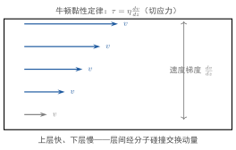

气体的黏性现象
一句话定义
气体的黏性现象是气体层间存在宏观速度差时，通过分子碰撞把快层动量传递给慢层、使速度趋于均匀的动量输运过程，宏观表现为黏滞阻力。
定性
先把这个”互相拖拽”看个清楚。
想象一条管道里流动的气体：靠近管壁那一层被管壁”粘”住、几乎不动，越靠中心流得越快，形成一个从快到慢的速度梯度。快速层里的分子，会通过碰撞把”快”分一点给慢速层；慢速层又把”慢”拖住快速层。这种层与层之间互相”拖拽”的效应，就是黏性——它让气体表现出”内摩擦”，流动时沿线被磨平。
关键要看清机制：黏性与扩散一样，靠的是分子乱跑+碰撞，但搬运的对象不是质量、而是动量。快速层的分子带着较大的定向动量乱跳到慢速层，一撞就把一些动量交出去，相当于对慢层”往快拉”；慢层分子跳到快层，带去的动量小，相当于对快层”往慢拖”。净效果就是动量从快层流向慢层，宏观速度差被逐渐抹平，表现为黏滞阻力。
它在体系里的位置：黏性、扩散、热传导是三大输运。三者机制一致（随机游走+碰撞搬运某种量），对象不同——黏性搬动量、扩散搬质量、热传导搬能量。黏性尤其重要，因为它决定了流体流动时的”内摩擦”及边界层、黏毒损耗，是流体力学与气体动理论的连接点。
反直觉的点：黏性与扩散同源，但”搬运”的是抽象的量——动量。物体之间的摩擦通常是”接触”的直觉，但气体的黏性没有那样的”接触”，它纯粹是分子带着各自的定向动量穿梭、碰撞换位的结果。这让气体黏性比我们想象的更”统计”、更依赖碰撞频率与自由程。

图：气流速度沿 方向分层变化，存在速度梯度 ；层间动量交换产生剪切应力 ，满足牛顿黏性定律 。
数学表达
黏性现象的宏观规律是牛顿黏性定律：
是切应力（单位面积上的剪切力，）， 是黏度（黏滞系数，）， 是速度沿 （垂直流向）的梯度。切应力方向使快层减速、慢层加速，故它是使速度分布趋于均匀的”内摩擦”。
由初级输运理论，气体黏度与微观量的关系：
进而用 、、 代入，可得一个反直觉结论：
符号： 是气体质量密度， 是平均速率， 是平均自由程， 是分子质量。读这个结构： 是”切应力 ∝ 速度梯度”， 是”气体有多黏”（输运动量的能力）；微观上 表明黏度由密度、分子速率、自由程共同决定。
关键性质
-
切应力与速度梯度成正比。 。为什么：宏观速度梯度是”层间动量差”的度量，梯度越大、快慢层差异越悬殊，分子穿梭换动量越多，内摩擦越强。
-
气体黏度近似与压强无关。 在一定压强范围内， 不随 变。为什么：，而 、，两者相消——加压虽使分子更密（ 升）、碰撞更频繁，但自由程 反比缩短，净效果是黏度几乎不变。这与直觉相悖，正是分子输运的特色。
-
气体黏度随温度升高而增大（近似 ）。 为何：温度升则 增大，分子更快、动量传递更频繁，黏度上升。注意与液体相反——液体升温黏度减小，气体升温黏度增大，这是气体黏性最标志性的反差。
-
黏度取决于 的组合。 。为什么： 是”承接动量的物质多少”， 是”分子多快”， 是”一次能带多远的动量”——三者相乘决定黏性的强弱。
-
黏性使流速趋于均匀、耗散机械能。 切应力给快层减速、慢层加速，最终速度梯度被磨平；同时动能经分子碰撞转化为内能（耗散为热）。为什么：动量由快到慢持续净输运，速度差被”抹平”，能量随之转化为无序热运动（不可逆）。
推导
现在把 真正推出来——不是背公式，而是从”层间分子交换动量”看起。
先抛问题：宏观上”快层拉慢层、慢层拖快层”的黏滞阻力，怎么从分子穿梭换动量导出？为什么 会与压强无关？
设物理场景。气流沿 方向流动，速度 随离管壁高度 变化：靠中心快、靠壁慢，梯度 。考虑 处一层单位面积的分子。
列依据。三条：一是分子无规运动、各向随机；二是分子每飞约一个 撞一次，可认为”来自 两侧距离 层的分子带着那层的定向速度”；三是定向动量 随分子穿梭被搬运。
逐步演绎。第一步，看层面交换。分子横向（ 方向）乱跳，从下方较慢层（）跳上来的分子，带着那层较小的 ；从上方较快层（）跳下来的分子，带着较大的 。统计上横向穿过单位面积（六个方向之一，取 ）的分子流约为 。
第二步，计算动量净输运。因快层分子动量大、慢层小，净效果是下方的慢层被加速、上方的快层被减速。单位时间通过单位面积净输运的动量（即切应力）为：
第三步，差分近似。，代入：
第四步，用 表示并对照牛顿黏性定律 ：
（更精细的输运理论会把 修为 附近的系数，量级不变。）
回头看。结论水到渠成：气体的黏性，是**快慢层的分子互相穿梭、各带各的定向动量，一撞就把动量”交接”**造成的宏观内摩擦。 点出三要素：（物质密度）、（分子快慢）、（一次传递多远）。尤其关键的是 常数（、），使得 近似与压强无关——这一”反常”现象正是分子输运最鲜明的指纹，也是推导最值得回味的洞见。
为什么重要
黏性是流动气体最普遍的”内摩擦”，其地位与后果：
- 决定流体阻力与损耗：管道输气、机翼表面、轴承润滑油——黏性耗散把机械能转成热，造成压降与温升，是流体力学里”黏性损失”的根源。
- 塑造边界层与流型：有黏性才有边界层（贴壁静止层）与速度剖面；黏度大小决定层流/湍流的转换（雷诺数），是工程判据的核心参数。
- 区别气体与液体的黏性行为：气体黏度随温度升高（）、近似与压强无关；液体相反——这为选润滑、密封、流动介质提供了最直观的物理指针。
工程动机：管道设计要算沿程阻力（与 相关），风洞/空气动力学要用 判边界层，航天再入的激波与热流也依赖气体的黏性与传热。不知道 随温度、压强的规律，就无法预估流动损耗与热管理。
黏性还悄悄决定了另一个工程现象——气体在流动中的”自搅拌”与边界层发育。有黏性才会有贴壁的静止层，才会有气流在壁面被”拖慢”的边界层，进而决定分离点、激起湍流。航空、管道、涡轮叶片设计，无不在与”这层黏性带来的边界层”搏斗；而边界层的厚薄、转换点，都与 同温、压强的取值密切相关。黏性看似”拖慢”，实则在决定整个流动形态。
适用条件
黏性（牛顿黏性定律）成立须满足：
- 速度梯度存在、层流（牛顿流体）：切应力与梯度成线性关系（牛顿流体）。湍流、非牛顿流体（高分子、浆料）不满足线性黏性。
- 较稀薄的理想气体、远离高压：初级公式 基于 碰撞模型；高压稠密气体分子间距小、 模型失真。
- 远小于流动尺度、分子运动可统计平均：宏观速度可用连续函数表示。
边界要说清：极低压（ 接近容器尺寸）出现滑移流、能量/动量输运机制改变；更真实的高温（拆解电离）、高密（近临界）气体黏度需更精细模型。真实边界：真空微管、等离子体、超临界流体，都超出简单牛顿黏性范围。
边界与误区
-
误区一：把黏性当作气体”静止接触”的摩擦。 根因：日常摩擦是接触，气体黏性直觉相似。正确区别：气体黏性是分子穿梭交换动量的统计结果，不存在”层与层接触”；它靠碰撞”隔空”把动量从快传到慢，是一种微观输运、不是宏观接触摩擦。
-
误区二：以为压强增大黏度一定增大。 根因：物质变密、摩擦力更像增大。正确区别：气体 ，而 近似相消，故黏度近似与压强无关。加压不显著增大气体黏性——这是与直觉相反的分子输运特性。
-
误区三：以为气体黏度随温度升高而减小。 根因：液体（如油）升温变稀是常见经验。正确区别：气体升温黏度反而增大（），液体才升温变稀。方向相反，千万别混——这是气体与液体黏性最本质的区别。
-
误区四：忽略黏性的耗散与不可逆。 根因：把黏性只当成”阻尼”。正确区别：黏性使机械能经分子碰撞不可逆地转化为内能（热），是热力学第二定律意义的耗散；它不仅减速，还生热。摩擦生热、流动温升正是黏性耗散的体现。
对照
最容易和黏性现象混的是气体的热传导现象（同属输运）。两者只用一个关键差异区分：
黏性输运”动量”，热传导输运”能量”。
黏性的驱动梯度是宏观速度 ，搬运的是定向动量；热传导的驱动梯度是温度 ，搬运的是能量。一句话记忆：速度不平→黏性（动量），温度不平→热传导（能量）。黏性、扩散、热传导三者构成了”梯度—输运”的完整体：浓度对质量、速度对动量、温度对能量——同一物理图像，三个不同对象。
例子
我们把气体黏度随压强、温度的规律用起来。
先看压强无关性：设空气 、 时 。据 且 常数，若压强翻倍到 ， 翻倍但 减半，相消后 仍约 ——几乎不变。这解释了为何管道气压升高，沿程黏性阻力系数变化不大。
再看温度依赖：若把空气从 加热到 （升温 4 倍），，则 约增大到 倍，约 ——空气越热越”黏”。
反推工程含义：燃气轮机、内燃机里高温气体的黏度比室温大，因此高温气流在管道里的黏性损耗、边界层厚度都相应变化，需按实际温度取 ；而真空系统或高空（低压）下， 却几乎不受压强影响，仍按温度算。“气热更黏、压不敏感”是气体黏性给工程师的两个硬记忆点，直接决定流动摩擦与热管理估算的准确性。
最典型的工程应用是管道沿程的摩擦压降。气体流经一根管道，黏性在壁面相邻层间做”内功”，把机械能耗成热，造成压降与温升——压降大小与 、流速、管长成正相关。空气动力学里机翼、机身表面的摩擦阻力也源自黏性边界层的剪切应力，与 及速度梯度密切联系。黏性是把”流动的能量”悄悄转成”热”的过程，所有流动损耗的估算，都要先问一句 是多少。